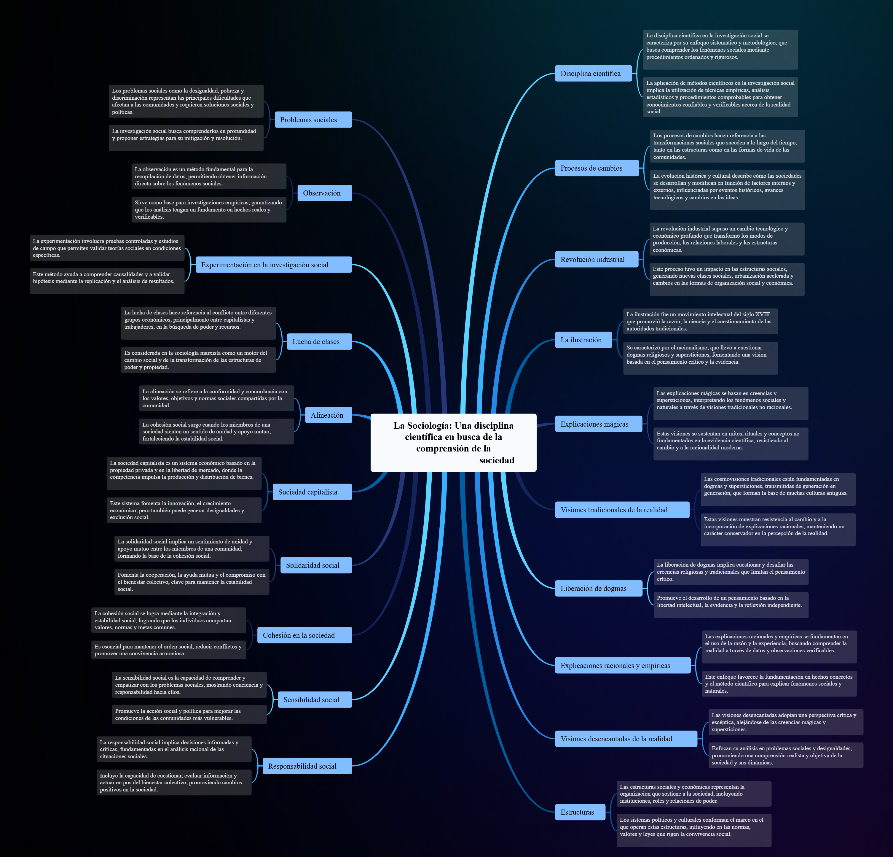

La Sociología: Una disciplina científica en busca de la comprensión de la sociedad - Compiló: Mgs: Álvaro Diaz
Actividad
1. Elaborar un glosario con las palabras resaltadas en negrilla en el texto.
Disciplina científica: Es una rama del conocimiento organizada y estructurada que utiliza métodos científicos (observación, análisis y experimentación) para estudiar y explicar fenómenos específicos de la realidad.Procesos de cambios: Son las transformaciones que experimenta una sociedad en sus aspectos económicos, culturales, tecnológicos y políticos a lo largo del tiempo. Implican evolución y adaptación constante.
Revolución industrial: Fue un periodo histórico iniciado en el siglo XVIII que marcó el paso de la producción manual a la mecanizada, impulsando el desarrollo tecnológico, urbano y económico.
La ilustración: Movimiento intelectual y cultural del siglo XVIII que promovió la razón, la ciencia y la educación como medios para liberar al ser humano de la ignorancia y los dogmas religiosos.
Explicaciones mágicas: Son interpretaciones basadas en creencias sobrenaturales o mitológicas para justificar fenómenos naturales o sociales, sin recurrir al razonamiento científico.
Visiones tradicionales de la realidad: Formas de entender el mundo que se basan en costumbres, religión o autoridad heredada, sin cuestionamientos ni comprobación científica.
Liberación de dogmas: Proceso mediante el cual las personas dejan atrás creencias impuestas o incuestionables, favoreciendo el pensamiento libre, crítico y racional.
Explicaciones racionales y empíricas: Son interpretaciones que se fundamentan en el razonamiento lógico y en la observación o comprobación directa de los hechos mediante la experiencia.
Visiones desencantadas de la realidad: Perspectivas que eliminan lo sobrenatural y explican el mundo desde la ciencia, la lógica y la observación objetiva.
Estructuras: Son los sistemas o conjuntos organizados de elementos que sostienen y dan forma a la sociedad, como las instituciones políticas, económicas o familiares.
Problemas sociales: Situaciones que afectan negativamente a una parte significativa de la población, como la pobreza, la desigualdad, el desempleo o la falta de acceso a la educación.
Observación: Método básico de la investigación científica que consiste en analizar de manera directa los hechos o comportamientos para obtener información objetiva y verificada.
Experimentación en la investigación social: Técnica que utiliza pruebas controladas o comparaciones para comprobar hipótesis sobre fenómenos sociales y comprender sus causas y efectos.
Lucha de clases: Conflicto entre distintos grupos sociales con intereses económicos opuestos, principalmente entre la clase trabajadora y la clase propietaria.
Alineación: Estado en el que una persona se siente desconectada o sin control sobre su trabajo, su entorno o los resultados de sus acciones dentro de la sociedad.
Sociedad capitalista: Sistema económico basado en la propiedad privada, la libre competencia y la búsqueda de beneficios, donde los medios de producción pertenecen a particulares.
Solidaridad social: Valor que impulsa la ayuda mutua, la cooperación y el apoyo entre los miembros de una comunidad para alcanzar el bienestar común.
Cohesión en la sociedad: Grado de unión y sentido de pertenencia que mantiene a las personas integradas, colaborando en armonía dentro de un grupo o comunidad.
Sensibilidad social: Capacidad de percibir, comprender y responder con empatía ante los problemas o injusticias que afectan a otros en la sociedad.
Decisiones informadas y críticas: Elecciones basadas en el análisis de información confiable, la reflexión racional y la evaluación de consecuencias, evitando actuar por impulso o desinformación.
2. Elaborar un mapa mental con las palabras del glosario.

3. ¿Indagar como la evolución de los saberes sociales durante este periodo afectó a la sociedad?
Rta: La sociología sigue siendo una disciplina relevante y necesaria porque permite comprender los cambios, problemas y dinámicas que afectan a las sociedades modernas. A través del análisis científico de las estructuras sociales, la cultura, la economía y la política, la sociología ayuda a identificar las causas de fenómenos como la desigualdad, la pobreza, la violencia o la discriminación.
Además, fomenta la sensibilidad social y el pensamiento crítico, ya que impulsa a las personas y a los gobiernos a tomar decisiones informadas basadas en la evidencia y no en prejuicios o suposiciones.
También sigue siendo esencial porque orienta la formulación de políticas públicas, el trabajo comunitario, la educación, la investigación social y la búsqueda de cohesión y solidaridad dentro de las comunidades.
La sociología mantiene su importancia porque ayuda a comprender cómo funciona la sociedad, cómo cambian las relaciones humanas y cómo construir un entorno más justo, equitativo y participativo.